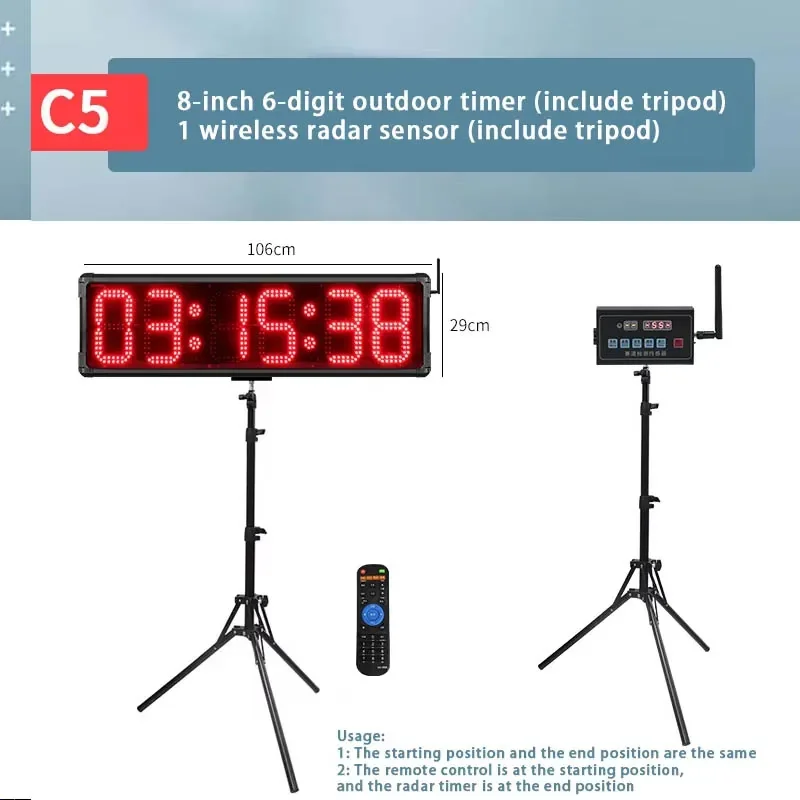
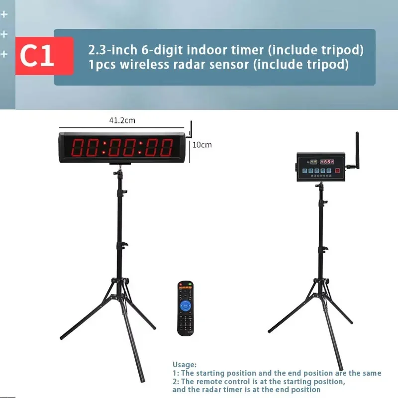
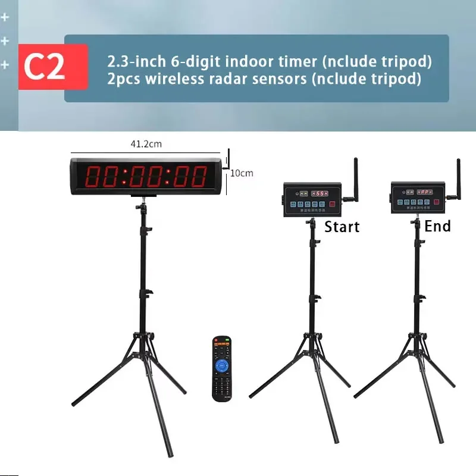
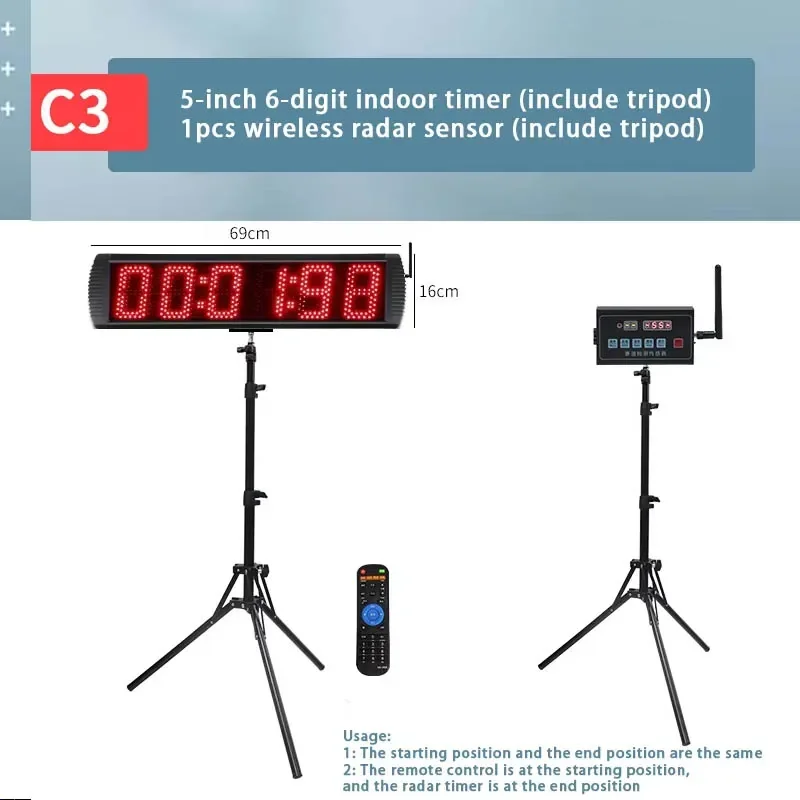
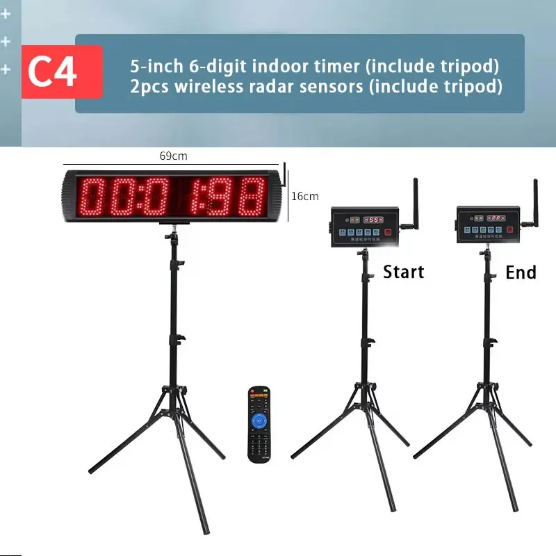
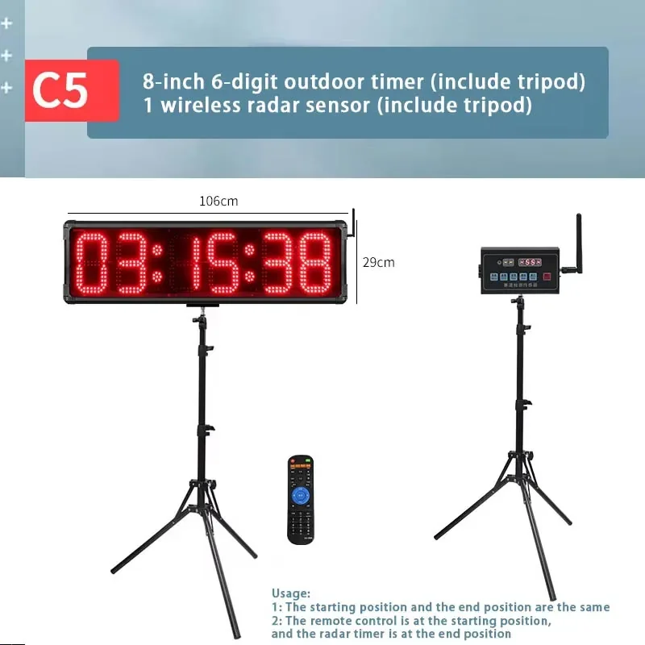
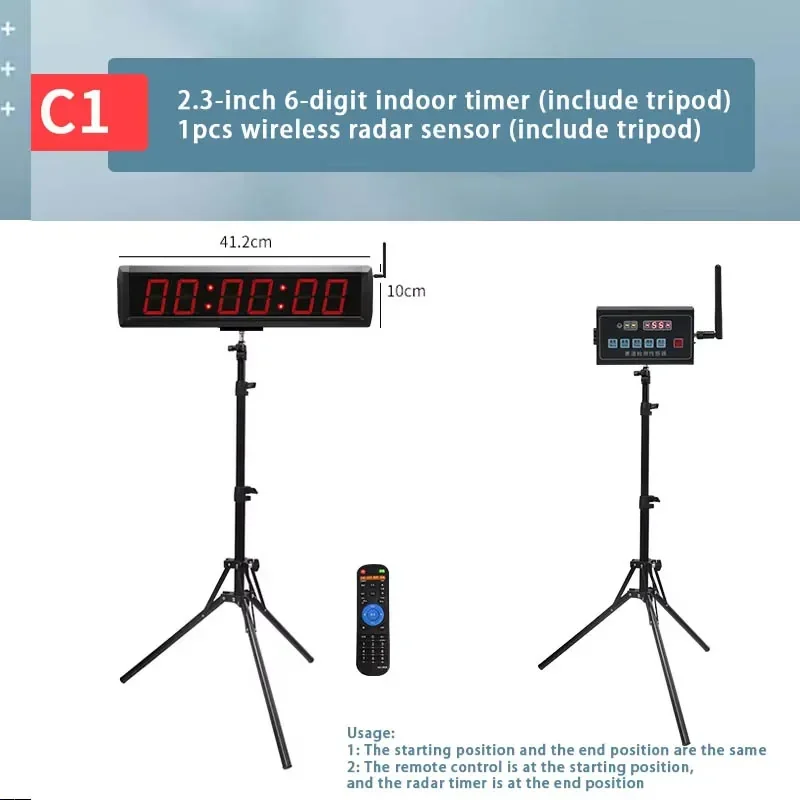
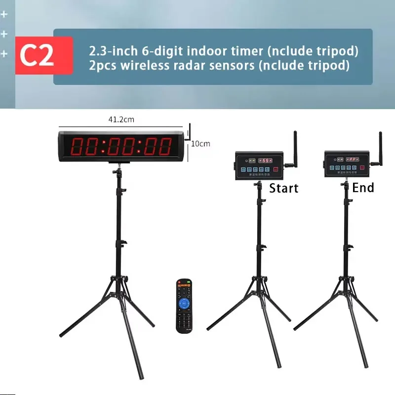
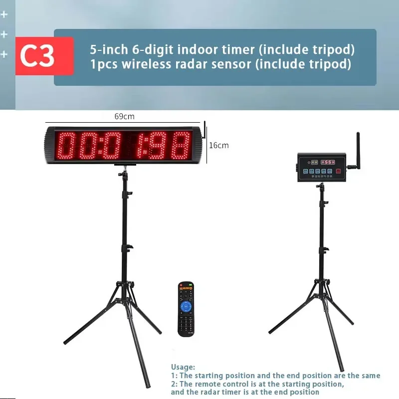
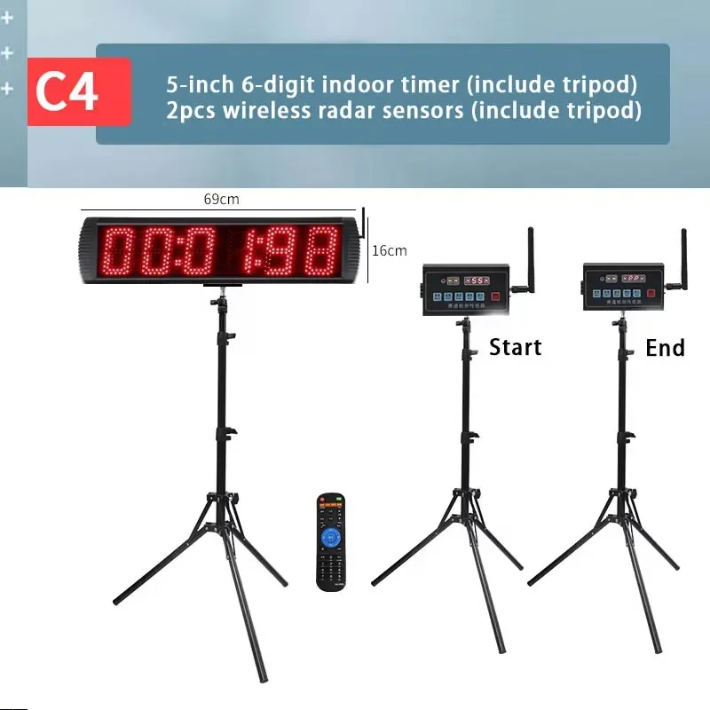

GANXIN Chronomètre de course télécommandé avec piste de détection radar sans fil pour l'entraînement au dribble en football et basketball
Améliorez votre entraînement avec le chronomètre de course télécommandé GANXIN, un outil révolutionnaire conçu pour faire passer vos exercices de football et de basketball au niveau supérieur.
Ce système innovant est doté d'un capteur radar sans fil qui mesure avec précision la vitesse et la distance, fournissant un retour d'information en temps réel pour une analyse précise des performances. Grâce à sa télécommande, vous pouvez facilement démarrer, arrêter et régler le chronomètre depuis n'importe quel endroit du terrain.
- Détection radar sans fil : Obtenez des mesures précises de la vitesse et de la distance pour un suivi approfondi des performances.
- Télécommande :
- Démarrez, arrêtez et réglez le chronomètre facilement, même à distance.
- Idéal pour les exercices de football et de basketball :
- Optimisez vos séances d'entraînement grâce à un retour d'information ciblé et à la compétition.
Le chronomètre de course télécommandé GANXIN permet aux athlètes de tous niveaux d'améliorer leurs dribbles, leurs passes et leur agilité générale.
Améliorez votre expérience d'entraînement et libérez tout votre potentiel grâce à cet outil de pointe.Le chronomètre de course télécommandé GANXIN est conçu pour optimiser vos entraînements grâce à ses fonctionnalités innovantes. Ce circuit de course sans fil, équipé d'un capteur radar, offre un chronométrage et un retour d'information précis, permettant aux athlètes de mesurer leur vitesse et leurs performances en temps réel.
- Capteur radar sans fil : Mesure avec précision la vitesse des joueurs sur la piste pour un chronométrage optimal.
- Télécommande : Démarrez et arrêtez les courses à distance pour un contrôle aisé pendant vos entraînements.
- Affichage LED : Affiche clairement les temps de course et autres informations pertinentes pour un retour d'information immédiat.
Le chronomètre de course télécommandé GANXIN est fabriqué avec des matériaux durables et une technologie de pointe pour garantir des performances fiables.
- Matériaux : Fabriqué à partir de matériaux robustes pour une utilisation durable.
- Alimentation : Fonctionne sur batterie rechargeable, offrant une grande flexibilité pour les séances d'entraînement dans différents lieux.
- Connectivité sans fil : Utilise la technologie sans fil pour une utilisation et une transmission de données pratiques.
Ce chronomètre de course innovant offre de nombreux avantages aux athlètes et aux entraîneurs souhaitant optimiser leurs programmes d'entraînement.
- Chronométrage précis : Fournit des mesures de vitesse précises, permettant aux athlètes de suivre leurs progrès et d'identifier leurs axes d'amélioration.
- Analyse des performances améliorée : Permet aux entraîneurs d'analyser les données de performance des joueurs et de développer des stratégies d'entraînement personnalisées.
- Motivation accrue : L'aspect compétitif de la course peut stimuler la motivation des athlètes et les encourager à se surpasser.
Le chronomètre de course télécommandé GANXIN est convivial et polyvalent pour une variété de sports et de scénarios d'entraînement. Configurez la piste à la longueur souhaitée et ajustez les paramètres de la télécommande selon vos besoins. Les athlètes peuvent ensuite s'affronter sur la piste, leur vitesse étant enregistrée par le capteur radar. L'écran LED affichera instantanément les temps de course, permettant aux athlètes de comparer leurs résultats et de suivre leurs progrès.